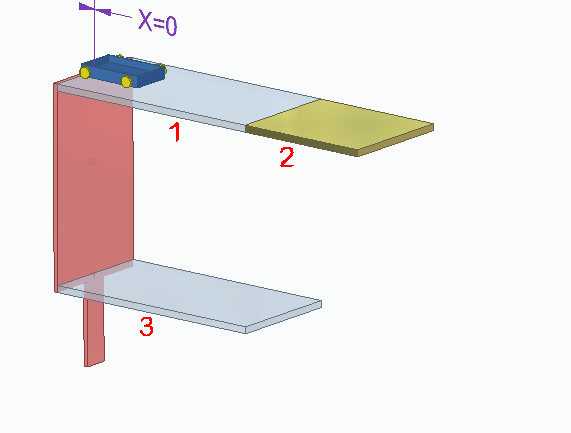
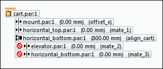
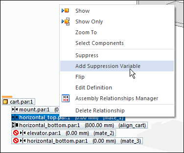
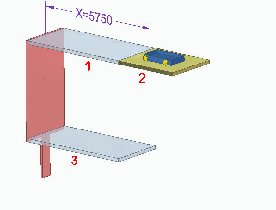
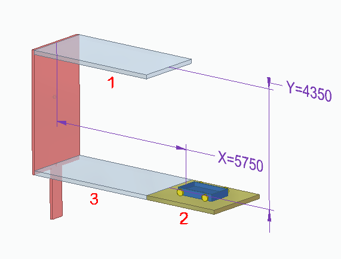
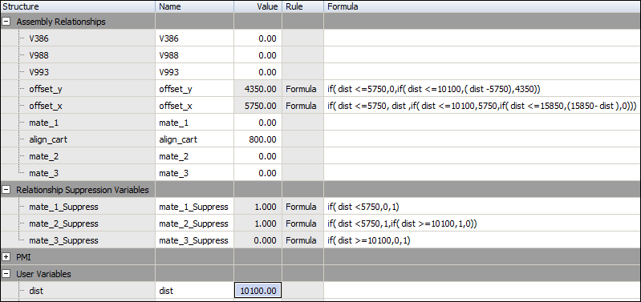
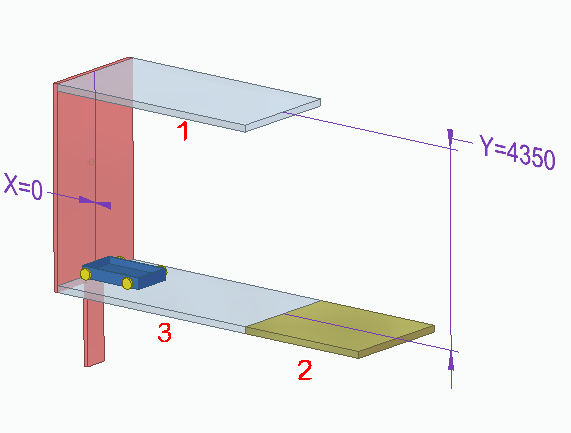

Add Suppression Variable command
You can use the Add Suppression Variable command to control part features, assembly features and assembly relationships. The command adds a variable to the Variable Table. You can use the variable to turn on or off a feature or relationship based on a condition being met.
Two hole features are placed, a large one and a small one. If the width of a certain part becomes wider than a determined value, a larger hole will be needed. At the point where the width exceeds the determined value, the small hole is suppressed and the large hole is unsuppressed.
The Add Suppression Variable command is located on the shortcut menu of a feature or relationship selected in PathFinder.
Adding suppression variables to parts
For example, when you add a suppression variable to an extruded cutout in Feature PathFinder a new entry is added to the Name column in the Variable Table named:
ExtrudedCutout_1_Suppress
In the Variable Table, you can change the value of the suppression variable to control the feature:
0=Unsuppressed
1=Suppressed
Suppression variables for features only work for ordered features.
When you add a suppression variable to the Variable Table, you can also use an external spreadsheet to specify whether a feature is suppressed or unsuppressed. For more information on linking variables to an external spreadsheet, see the Using variables Help topic.
Adding suppression variables to assembly features
Assembly features can be suppressed in the same manner as ordered part features.
Adding suppression variables to assembly relationships
You can suppress an assembly relationships by adding a suppression variable to an assembly relationship selected in the lower pane of Assembly PathFinder.
Watch the following video to see how to add suppression variables to assembly relationships.
Conditional statements in the formula field of the Variable Table can control when to suppress or unsuppress an assembly relationship.
An example of a conditional statement in a variable table formula is shown below. In the example, if the variable dist is greater than 2000, the mate_1_Suppress value determines if the relationship is suppressed. If the formula returns a 1 (one), the value is suppressed. If the formula returns a value of 0 (zero), the value is unsuppressed. Shown below is the suppression variable when dist is equal to a value of 3000.
Example of suppression variables in assembly relationships
In this example, a motor defined using the Variable Table Motor command is used to increment a distance variable. Relationships are suppressed based on the value of the variable used in the motor.
The completed assembly in this example can be downloaded for illustration purposes. After download, extract the contents of the compressed file into a folder. The variable formulas are in the variable table and a variable table motor exists in the example.
Click here to download the compressed file containing the assembly and parts.
At the start, the side wall of the cart is mated to the face of the mount with a zero offset. The offset of this relationship will control the horizontal distance that positions the cart.

The motion of the blue cart will move the cart to part 2.
Part 2 will lower to the level of part 3, carrying the cart with it. This happens because the mate with part 1 becomes suppressed and the mate with part 2 becomes unsuppressed when the motor variable matches the condition in the variable table formula.
Once at the same level with part 3, the cart will move horizontally to the initial position. The mate relationship with part 2 then becomes suppressed and the mate with part 3 becomes unsuppressed.
The variable table motor will also control the height of part 2 by varying the planar align relationship it has to part 1.
Three mate relationships control the part that the cart is attached to. A mate is established between the bottom face of the cart and part 1. The relationship is suppressed by right-clicking the relationship in the lower Assembly PathFinder pane and selecting the Suppress command. By suppressing this relationship, a mate can be established with the same face to part 2. Repeating the process, suppress the mate with part two and create a mate with part 3.
To position the cart attached to the first part, suppress the mate relationship with part 3 and unsuppress the relationship with part 1.

To establish the suppression variables, select each mate relationship that requires a suppression variable and use the Add Suppression Variable command to add it.

As the variable dist is incremented by the variable table motor, formulas control the behavior of the suppression variables and the offsets required to move the parts. Conditional IF statements, similar to those found in Excel are used to control the suppression variables.
In this example, there are four places where the suppression variables will need to be changed. They are:
dist=0
dist=5750
dist=10100
dist=15850
Shown below is the variable table at each of those values.
At dist=0
At dist=5750

At dist=10100


At dist=15850

How do I
Example: Creating relationships between dimensions of several profilesDefine limits for a variable
Edit an existing variable
Create a Variable Using a Function or Subroutine
Create a variable with a link to a spreadsheet
Create a Variable with a value or expression
Display dimensions in the Variable Table
Expose a variable
Extract Variable Table data using property text
Example: Linking variables to a spreadsheet
Suppress a feature using the Variable Table
Format a Column
Edit a formula
Edit a Formula Containing a Function
Insert a function into a formula
Edit an existing variable for a part within an assembly
Link variables between parts in an assembly
Learn more
Using variablesLook up more details
Variables commandVariable Table dialog box
Filter dialog box
Variable Rule Editor dialog box
Edit Formula command
Edit Formula command bar
Peer Variables command
Peer Variables command bar
Function Wizard Step 1 of 2 dialog box
Function Wizard Step 2 of 2 dialog box
Alphabetical List of Functions
Show All Formulas Command
Show All Names Command
Show All Values Command
Copy Link command
Clear Contents command
Filter Command
Paste Link Command
Open Source command